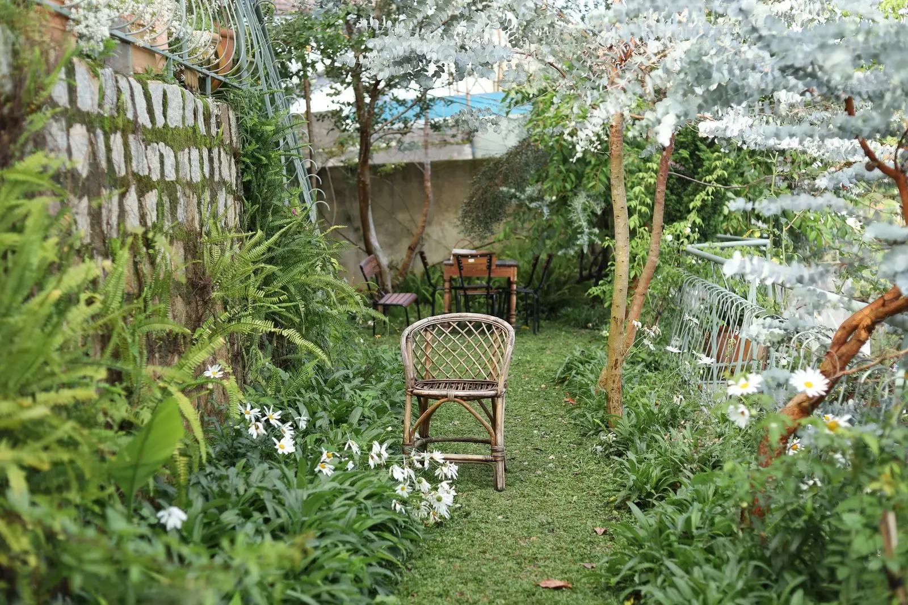
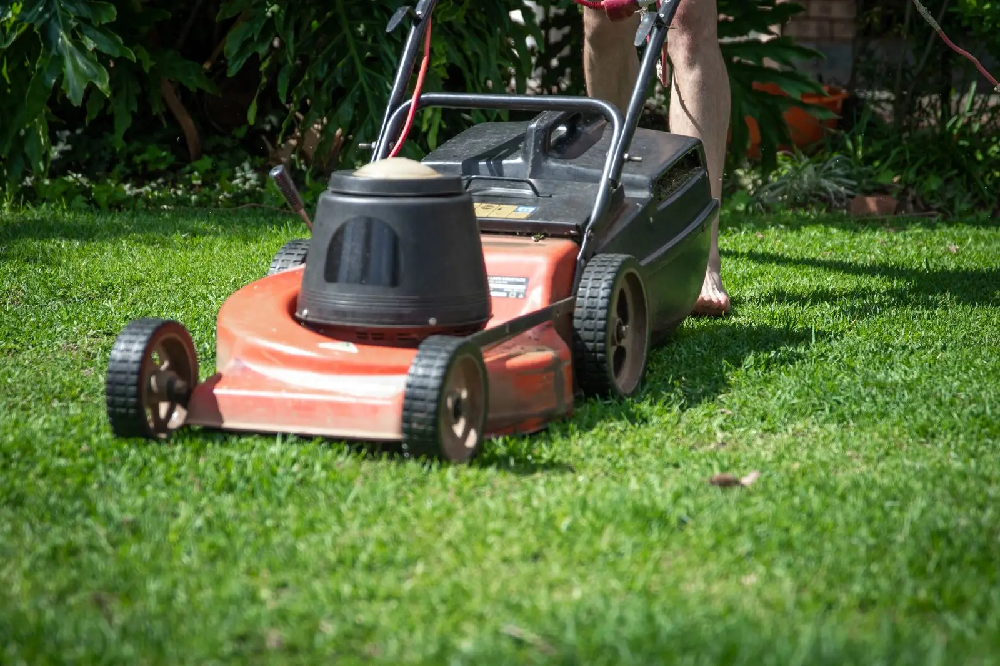

Garden design
Creative hard landscaping design and soft planting.
Sandy's Landscapes
Garden design, Driveways, patios & paths, Fencing — Pembrokeshire & West Wales.
What we do
Creative hard landscaping design and soft planting.
Quality paving slabs and blocks.
Made-to-measure fencing.
Decks and walls of all types.
Pruning through to stump removal.
Fountains to ponds, plus own excavator for groundwork.
About
Sandy's Landscapes offers a complete design and construction service covering all hard and soft landscaping for private and commercial customers throughout west Wales, with a detailed hand-drawn plan for your approval before work starts.
Gallery
Sample imagery from Pexels standing in for Sandy's Landscapes projects — to be replaced with real project photos.




Service area
Enquire
Tell us about your project and we’ll get back to you.
Email: info@sandyslandscapers.co.uk
What this demo improves